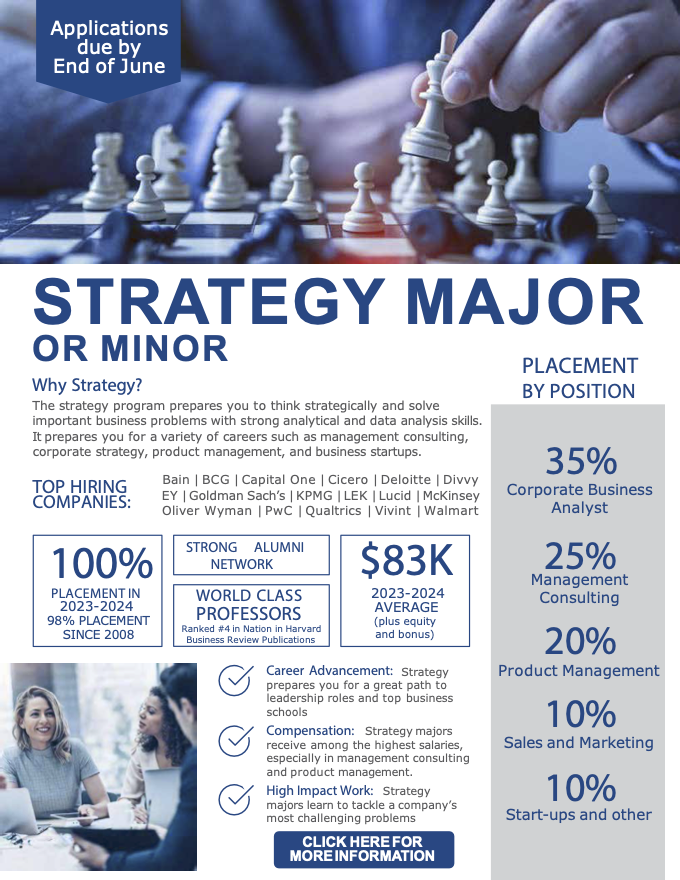

4 Careers

Overview

Consulting
Management Consulting offers students the opportunity to work with leading firms solving complex business challenges across a wide range of industries. Consultants serve as trusted advisors—analyzing problems, designing solutions, and supporting implementation to drive organizational success.
BYU students who have served missions are uniquely prepared for a consulting because of several key characteristics shared between consulting and missionary service:
- Working with senior leaders – Consultants often collaborate with senior clients, much like missionaries engage with ward councils composed of seasoned Church members and leaders.
- Close knit team collaboration – Consultants typically work in small teams, building strong bonds and spending significant time together, similar to the companionship dynamic on a mission.
- Project-based structure – Consulting projects often last six weeks to six months before transitioning to a new client or project which mirrors how missionaries rotate through different areas.
The ability to quickly build trust and rapport with a broad range of stakeholders is an essential skill for success in both missions and consulting.
The work hours and lifestyle of a consultant can vary widely, depending on the firm and the project. While there are certainly quieter moments, in general it is considered a rigorous and intense profession. McKinsey is famous for using the phrase that working there is “more than a job but less than a life.” That being said, many Latter-day Saints have successful careers in consulting and are able to set appropriate boundaries to thrive professionally, in their families, and in church service.
Relatively high turnover is common in the field of consulting with many new graduates spending 2 to 3 years working then pursuing an MBA, return to their consulting firm for two additional years and then exit to a corporate strategy type role.
Others exit directly after 2 to 3 years into other great corporate jobs or start their own companies.
Working in consulting has been compared to doing a medical residency. It can be a period of intensity in your career but lead to great future opportunities.
The BYU Stategy program has of one of the best consulting preparation curriculums anywhere in the country. Several of our faculty have worked as management consultants and infuse this experience throughout the program and the curriculum.
Through a partnership with Management Consulted we are pleased to offer our students access to the industry’s premier consulting preparation knowledge base and platform.
Corporate Strategy
A career in corporate strategy places students inside major companies where they help shape long-term business direction, analyze competitive positioning, and drive growth initiatives. Strategy professionals work closely with senior leadership to make data-driven decisions on market entry, M&A, and innovation. It’s an ideal path for those who enjoy solving strategic puzzles from within a company and want to influence its trajectory from the inside out.
Product Management
Product managers (PMs) are at the heart of technology and innovation, acting as the bridge between customer needs, business goals, and engineering capabilities. They lead cross-functional teams to discover, develop, and deliver products that users love and businesses value. Strategy students bring strong problem-solving, prioritization, and customer-centric thinking to this fast-paced and impactful career.
Entrepreurship
Entrepreneurship allows students to turn ideas into ventures—whether by founding startups, joining early-stage teams, or launching within established companies. It requires vision, grit, and a deep understanding of markets, customers, and value creation. Strategy students are equipped with frameworks and experience to navigate uncertainty and build businesses that scale.
Other Career Paths
Strategy students pursue a wide range of paths beyond these traditional roles, including roles in private equity, venture capital, social impact, policy, business development, and general management. The analytical rigor and strategic mindset developed in the program prepare students to thrive in any setting where critical thinking and smart execution are valued.
Who can I talk with?
Bill Keenan is the Career Director for the Strategy program. He also serves students in the Entrepreneurship and HR majors. Bill is your first point of contact for everything career and recruiting related.
Bill meets with both pre-business and current Strategy students and can help you with:
- Exploring career paths/related career options
- Resume development
- Interview preparation (mock interviews, etc.)
- Recruiting timelines and processes
- Networking
- Job opportunity identification
- Deciding on an offer
- Declining job/internship offers
- Other questions you may have!
Learn more about the Marriott Business Career Center.
Several of our sponsored clubs also has a student Vice President dedicated to helping student with placement and connecting with alumni who could be helpful in your job search.
Please reach out to any of us for support and guidance in your job search.

Sarah Sun Kanell
Women in Strategy
VP of Outreach
Contact

Dustin Hubnik
Strategy Society
VP of Alumni
Contact
Dallan Clarke
Management Consulting
Vice President of Mentoring
Contact

Nathan McCauley
Product Management
VP of Placement
Contact
Tatum Frazier
Corporate Strategy
VP of Corporate Outreach
Contact
Catherine Rolapp
Corporate Strategy
VP of Corporate Outreach
Contact
Explore Placement Data
The table below is an interactive pivot table allowing you to filter and analyze the data according to your interest.
View on Desktop for best experience.